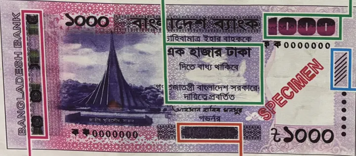
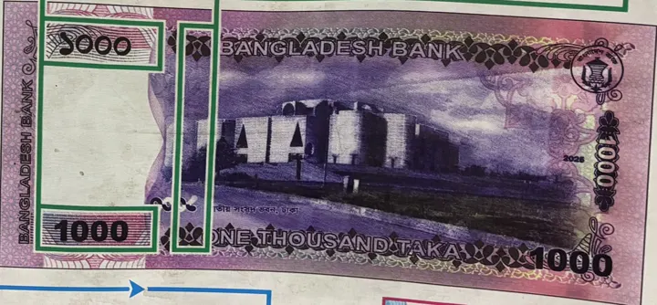
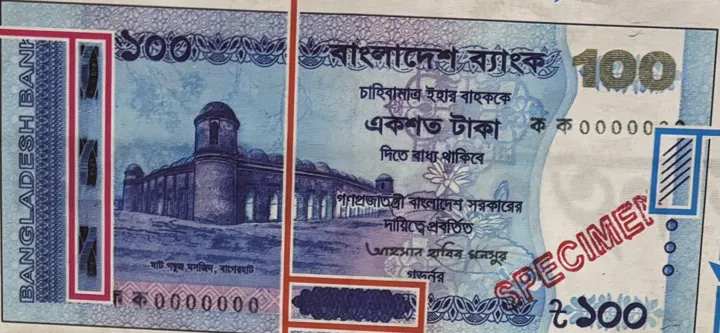
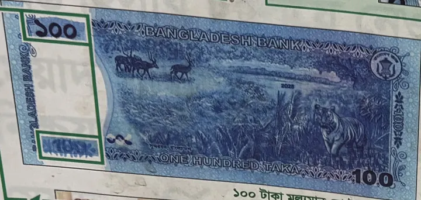
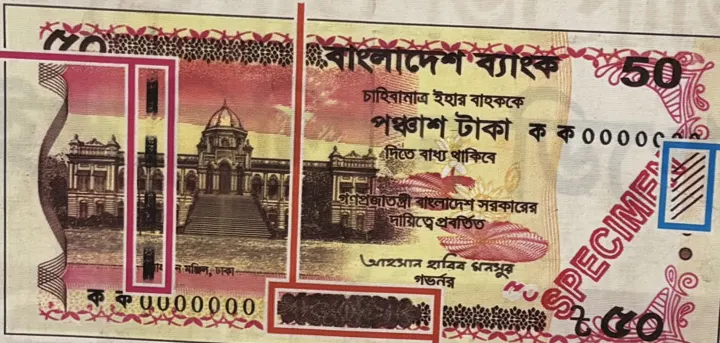
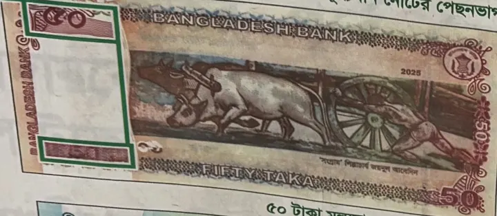
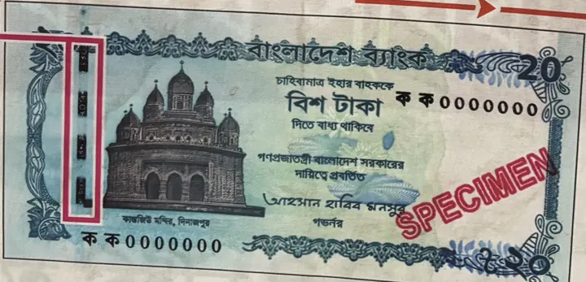
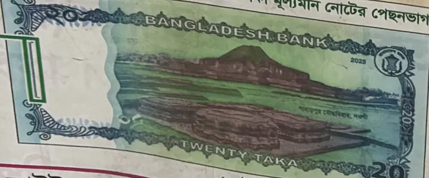

Is this taka note real?নোটটি কি আসল?
Pick your note, then go through the checks: feel it, tilt it, hold it to the light. A forger can copy one or two features. A real note has all of them.আপনার নোটটি বেছে নিন, তারপর একে একে মিলিয়ে দেখুন: ছুঁয়ে, নাড়াচাড়া করে, আলোর বিপরীতে ধরে। জালিয়াতরা এক-দুটি বৈশিষ্ট্য নকল করতে পারে, আসল নোটে সবগুলোই থাকে।
New series · ৳1000, ৳100, ৳50, ৳20নতুন সিরিজ · ৳১০০০, ৳১০০, ৳৫০, ৳২০What your note looks likeনোটটি দেখতে যেমন
The coloured boxes mark where each security feature sits.রঙিন ঘরগুলো দেখাচ্ছে কোন নিরাপত্তা বৈশিষ্ট্য কোথায়।








1. Feel it১. ছুঁয়ে দেখুন
Run your thumb over the front of the note. No tools needed.নোটের সম্মুখভাগে বুড়ো আঙুল বুলিয়ে দেখুন। কোনো যন্ত্র লাগবে না।
2. Tilt it২. নাড়াচাড়া করে দেখুন
Move the note back and forth under a light and watch the colours change.আলোর নিচে নোটটি সামনে-পেছনে কাত করুন আর রং বদলানো লক্ষ করুন।
3. Hold it up to the light৩. আলোর বিপরীতে ধরুন
Look through the note at a window or a bulb.জানালা বা বাতির দিকে নোটটি ধরে ভেতর দিয়ে দেখুন।
4. With a magnifier or UV light৪. আতশী কাচ বা ইউভি লাইট দিয়ে
A magnifying glass, a phone camera zoomed in, or the UV detector at a shop or bank.আতশী কাচ, ফোনের ক্যামেরায় জুম করে, বা দোকান বা ব্যাংকের ইউভি মেশিনে।
If a check failsকোনোটি না মিললে
- Compare it side by side with a note you got from a bank or ATM. Most fakes look wrong next to a real one.ব্যাংক বা এটিএম থেকে পাওয়া একটি নোটের পাশে রেখে মিলিয়ে দেখুন। আসল নোটের পাশে বেশিরভাগ জাল নোটই বেমানান দেখায়।
- Don’t pass it on. Take it to a bank branch and ask the teller to check it.নোটটি অন্য কাউকে দেবেন না। ব্যাংকের শাখায় নিয়ে ক্যাশ কাউন্টারে যাচাই করান।
- This list covers the new series only (governor Ahsan H. Mansur’s signature, theme “Historical and Archaeological Architecture of Bangladesh”). Older notes have different features: see Bangladesh Bank’s note guide.এই তালিকা শুধু নতুন সিরিজের জন্য (গভর্নর আহসান হাবিব মনসুর স্বাক্ষরিত, ‘বাংলাদেশের ঐতিহাসিক এবং প্রত্নতাত্ত্বিক স্থাপত্য’ শীর্ষক)। পুরনো নোটের বৈশিষ্ট্য আলাদা: দেখুন বাংলাদেশ ব্যাংকের নোট নির্দেশিকা।